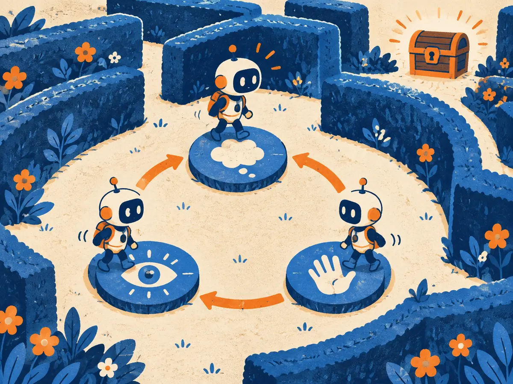

Agents: loops, memory & planning
A chatbot answers once. An agent keeps going: it decides what to do, uses a tool, looks at what happened and decides again, until the job is done or it runs out of budget. This lesson builds that loop from the ground up, then shows why long loops fail more often than you'd expect, and how to stop, budget and test them.
By the end you can
- Explain what makes a system an agent, trace a ReAct loop (reason, act, observe) and tell a workflow from an agent.
- Choose between plan-then-execute and interleaved planning, and say where reflection, compaction and long-term memory fit.
- Compute how per-step reliability compounds ($p^n$), set stopping rules and budgets, and evaluate an agent on task success and trajectories.
Take your best guess. A wrong guess now makes the right answer stick later.
An agent's task takes 20 steps. Each step is right 95% of the time, independently, and any wrong step ruins the task. Roughly how often does the whole task succeed?
- About 95%
- About 36%
- About 75%
- About 5%
Which of these is an agent rather than a fixed workflow?
- Code that asks a model to label each support ticket, then sends it to one of three fixed prompts
- A single prompt with three retrieved documents pasted in
- A model that picks which tool to call next, reads the result and repeats until it decides it's done
- A nightly job that summarises yesterday's emails with one model call each
From chatbot to agent: a model in a loop
In 2022 a language model could reason in text (chain of thought, RS.1) but couldn't check anything. Ask it for a date and it answered from memory, sometimes wrongly. Separately, people had wired models to tools, such as a search engine or a calculator. In October 2022, ReAct (Yao et al., 2022, "Synergizing Reasoning and Acting in Language Models") joined the two. The model wrote a thought, then an action, read the result, and wrote its next thought. With just one or two examples in the prompt, it beat imitation-learning and reinforcement-learning baselines on two interactive benchmarks, a text adventure game (ALFWorld) and an online shopping site (WebShop).
Then the idea went viral. In early 2023, open-source projects such as AutoGPT looped GPT-4 on open-ended goals ("grow my business") with little structure. They drew huge attention, and just as quickly a reputation for getting stuck in loops and burning tokens. By 2025 the pattern had settled into products that work: coding agents, research assistants, support agents that look up orders and issue refunds.
Strip away the branding and an agent is three things:
- A model that chooses actions. On every turn it reads the context and writes either a tool call or a final answer.
- An environment that answers. Tools (SY.4) run in your code and return observations: search results, file contents, error messages.
- A loop with a stop condition. Your code feeds each observation back and repeats until the model says it's finished or a limit is hit.
So an agent is a model choosing actions in a loop until it reaches a goal or a stop condition. This is the same loop as reinforcement learning's agent–environment loop (RL.1), with a language model as the policy and text as the state.
Workflows vs agents
Anthropic's guide "Building effective agents" (December 2024) draws a useful line. Workflows are "systems where LLMs and tools are orchestrated through predefined code paths". Agents are systems where "LLMs dynamically direct their own processes and tool usage". The guide names five common workflow patterns: prompt chaining, routing, parallelization, orchestrator–workers and evaluator–optimizer.
| Workflow | Agent | |
|---|---|---|
| Who picks the next step | Your code | The model |
| Number of steps | Known in advance | Unknown; depends on what it finds |
| Strengths | Predictable, cheaper, easy to test | Flexible on open-ended tasks |
| Costs | Breaks on cases you didn't plan for | Higher cost and latency; errors can compound |
The guide's advice is to find "the simplest solution possible" and add complexity only when it pays. Often one well-built model call with retrieval is enough. Use an agent when you can't predict the steps in advance: debugging code, open research, a customer problem that could go ten different ways.
A team's app always runs the same three model calls in order: extract fields, check them against a policy, draft a reply. What is it?
- A workflow (prompt chaining): the code fixes the path
- An agent, because it calls the model more than once
- An agent, because it uses a policy document
- Neither, because no tools are involved
ReAct: reason, act, observe
ReAct's trick is to make the model write two kinds of text, turn by turn. A thought is free text that plans or interprets ("I need both dates"). An action is a structured tool call. After each action, your code runs the tool and appends an observation. Then the model writes its next thought, which can react to what it just saw. The original paper gave the model a Wikipedia API with three actions: search, lookup and finish. Here is a short trace in that style:
The loop itself is a few lines of ordinary code. The model only ever produces text; everything else is yours:
messages = [system_prompt, user_goal]
for step in range(MAX_STEPS): # budget: never loop forever
reply = model(messages, tools=TOOLS) # thought + tool call, or a final answer
messages.append(reply)
if reply.is_final: # stop condition 1: the model says it's done
return reply.text
result = run_tool(reply.tool_call) # YOUR code runs the tool
messages.append(observation(result)) # the model reads it next turn
return "Stopped: step budget used up" # stop condition 2: the budgetModern APIs make the "action" part native: instead of parsing search[…] out of text, the model returns a structured tool call (SY.4), and reasoning models (RS.3) often think between tool calls on their own. The shape is unchanged: think, act, observe, repeat.
Why write the thoughts at all? The paper's ablations found that acting without reasoning did worse: the thoughts let the model keep track of its goal, notice when a search failed and change course. Thoughts also make the run debuggable, because you can read why each action was taken. They are not a faithful window into the model's computation, though (RS.1), so judge an agent by what it did, not only by what it said.
Explain like I'm 5

A little explorer robot wants the treasure chest in the middle of a garden maze. It can't see the whole maze, so it hops across three stepping stones, again and again.
On the think stone it decides: "Let's try the path on the left." On the act stone it walks a bit down that path. On the look stone it checks what it found: a dead end, or a step closer. Then it's back to the think stone with that new clue. Every lap brings it closer, and when it reaches the chest, it stops.
Where it breaks: the robot remembers the maze by itself, but a model remembers only what is written in its context. And a real agent needs someone to say "you've had 50 laps, stop", or it might go round forever.
In a ReAct loop, who actually runs search[Eiffel Tower]?
- The model, inside its own forward pass
- The search engine decides on its own to run it
- Nobody; the model imagines the result
- The application's code, which then appends the result as an observation
Planning and reflection
ReAct plans one step at a time. For longer tasks, two other habits help: planning further ahead, and learning from mistakes within the run.
Plan-then-execute. First ask the model for a whole plan ("1. find the failing test, 2. read the function, 3. fix it, 4. run the tests"), then carry out the steps. Plan-and-Solve prompting (Wang et al., 2023) showed that asking for a plan first helps on maths word problems, and ReWOO (Xu et al., 2023) planned all tool calls up front so the model didn't have to re-read the growing transcript at every step, saving tokens. A plan is also easy to show to a user for approval before anything happens.
Interleaved (ReAct-style). Decide one step at a time from the latest observation. It adapts to surprises, such as a search that returns nothing, but it can wander and lose the big picture.
Most practical agents mix the two: write a short plan or to-do list, work through it step by step, and re-plan when an observation breaks the plan. Coding agents often keep the to-do list as a visible checklist, which also helps the user follow along.
Reflection: critique, then retry
Models can often spot a mistake in an answer more easily than they avoid it the first time. Self-Refine (Madaan et al., 2023) had a model draft, critique its own draft and revise, in a loop. Reflexion (Shinn et al., 2023) went further for agents: after a failed attempt, the model writes a short verbal lesson ("I searched for the city, but the question asked about the river; search for the river next time"), stores it in a memory buffer, and reads it on the next attempt. No weights change; the "learning" is text. With unit tests as the feedback signal, Reflexion reported 91% pass@1 on the HumanEval coding benchmark, against 80% for GPT-4 alone at the time.
The catch: reflection works best when the feedback is real (a failing test, an error message, a checker). When a model judges its own work with nothing external to go on, it may confidently "fix" a correct answer or wave through a wrong one. Huang et al. (2024, "Large Language Models Cannot Self-Correct Reasoning Yet") found exactly this on reasoning tasks without external feedback. Ground the critique in something you can check.
In Reflexion, what carries the lesson from a failed attempt to the next one?
- A gradient update to the model's weights
- A short written reflection stored in memory and read on the next try
- A bigger model for the second attempt
- A higher sampling temperature
Memory: what the agent carries forward
A model has no memory between calls. Everything an agent "remembers" is text that your code chooses to put back into the context window. There are three layers, from short-term to long-term:
- In-context history. The running transcript: goal, thoughts, tool calls, observations. It is perfect recall, but it grows with every step, costs tokens on every turn and eventually overflows the window. Long, cluttered contexts also make models less reliable well before the limit (AG.2).
- Summaries and compaction. When the window fills up, replace the old transcript with a summary: decisions made, current state, open problems, next steps. Old tool results are the cheapest thing to drop, since a file read 30 steps ago rarely needs to stay word for word. Many coding agents compact automatically.
- Long-term stores. Notes saved outside the window and read back when relevant: a to-do or notes file, a vector store searched like RAG (SY.3), or memory files the agent loads at the start of the next session (AG.5). MemGPT (Packer et al., 2023) framed this like an operating system, with the model paging facts between a small "main memory" (the window) and a large external store. Generative Agents (Park et al., 2023) kept a "memory stream" of observations and retrieved by recency, importance and relevance.
The design question is always the same: what does the model need to see at this step? That is context engineering (AG.2). Two practical rules:
- Write state down early. An agent that keeps a short progress note can recover after compaction, or a crash, without redoing work.
- Treat memory as untrusted input. Anything written to long-term memory, including text copied from a web page, will be read back later as if it were trusted. An injected instruction that lands in memory can affect every later session (SY.7).
When one window isn't enough even with compaction, hand messy subtasks to subagents, each with a clean window, and keep only their summaries. That is the subject of AG.7.
An agent's window is 90% full after 80 steps of debugging. Which move keeps the important information and frees the most space?
- Delete the system prompt
- Start a new session with only the original goal
- Compact: summarise decisions, current state and next steps, and drop old tool results
- Fine-tune the model on the transcript
Why long tasks fail: reliability compounds
Suppose each step of a task succeeds with probability $p$, steps fail independently, and any failed step ruins the task. Then the chance the whole task succeeds is
$$P(\text{task}) = p^{\,n}$$where $p$ is the per-step success rate and $n$ is the number of steps. Every extra step multiplies in another factor below 1, so success decays exponentially with task length. Anthropic's guide lists "the potential for compounding errors" as a core cost of agents; this formula is why.
Worked example
- 10 steps at 95%: $0.95^{10} \approx 0.599$. A step that's right 19 times in 20 sinks 4 tasks in 10.
- 20 steps at 95%: $0.95^{20} \approx 0.358$. Doubling the length roughly squares the success rate: $0.599^2 \approx 0.358$.
- 20 steps at 99%: $0.99^{20} \approx 0.818$. Cutting the per-step error from 5% to 1% more than doubles task success.
The model is pessimistic in one way: real agents can recover. They see an error message, notice a failing test and try again, which is why observations matter so much. It is optimistic in another: one unnoticed bad step (a wrong assumption early on) can quietly poison every later step. Either way, the lesson holds: long tasks need high per-step reliability, or checks that catch errors.
- A 30-step task at $p = 0.98$ per step: $0.98^{30} =$
- What per-step success $p$ do you need for 90% success over 20 steps? $p = 0.9^{1/20} =$
- Add a check that catches every failed step, and retry it once (independently). At $p = 0.95$, a step now fails only if both tries fail: per-step success $1 - 0.05^2 =$
- The 20-step task with that check: $0.9975^{20} =$
Playground: how far can an agent get?
The orange curve is $p^n$. Slide the per-step success and the task length, then switch on a check-and-retry at every step (a perfect check, one independent retry).
The same arithmetic is why pass^k (all $k$ attempts succeed) falls so fast for agents (M4.8): reliability has to be very high before it looks good over many runs or many steps.
Your agent's tasks get twice as long (from 10 to 20 steps) with the same per-step success $p$. What happens to the task success rate?
- It is squared: $p^{20} = (p^{10})^2$
- It halves
- It stays the same, because $p$ didn't change
- It doubles
Stopping, budgets and failure modes
Every agent needs explicit rules for when to stop, because the model's own "I'm done" is not enough. Common stopping criteria, usually combined:
- Goal reached: the model calls
finish, or better, a check confirms it (the tests pass, the order is updated). - Step budget: a maximum number of tool calls or turns. Anthropic's guide calls stopping conditions "such as a maximum number of iterations" common practice.
- Token, money and time budgets: hard caps per task, enforced in your code.
- No progress: the same tool call with the same arguments three times, or no new information for several steps.
- Hand-off: the agent is stuck or unsure, so it asks the user instead of guessing.
Why cost grows faster than steps
Each turn re-sends the whole context. If the fixed part (system prompt, tool definitions, goal) is $B$ tokens and each step adds about $c$ tokens of thought, call and observation, then turn $k$ reads $B + (k-1)\,c$ tokens, and $n$ turns read
$$\text{input tokens} \approx nB + c\,\frac{n(n-1)}{2}$$The second term grows with $n^2$. Example: $B = 5{,}000$, $c = 2{,}000$, $n = 20$ gives $100{,}000 + 380{,}000 = 480{,}000$ input tokens for one task. At an illustrative $\$3$ per million input tokens, that is about $\$1.44$, before output tokens. Prompt caching (AG.2) makes the repeated prefix much cheaper, and compaction keeps $c\,n$ from growing without limit.
Common failure modes
- Loops: repeating the same failing action, or bouncing between two states. Detect repeats in code and stop or re-plan.
- Tool misuse: wrong arguments, the wrong tool, or inventing a tool that doesn't exist. Clear tool names and descriptions, validated arguments and useful error messages help a lot (SY.4).
- Compounding errors: an early wrong assumption that every later step builds on. Verify key facts early; checkpoints and tests catch drift.
- Premature "done": declaring success without checking. Make the stop condition a real check where you can.
- Losing the goal: after many steps the original instruction is buried mid-context. Restate the goal, keep a to-do list, compact.
- Being hijacked: a web page or document the agent reads contains instructions. That is prompt injection, the subject of SY.7.
An agent calls search["refund policy"] with identical arguments five times in a row. What is the best fix?
- Raise the step budget so it has more chances
- Add "don't repeat yourself" to the prompt and nothing else
- Detect repeated identical calls in code, then stop or force a re-plan, and return a clearer result or error from the tool
- Switch to a higher temperature
Evaluating agents: outcomes and trajectories
You can't evaluate an agent by reading one nice-looking answer. Agent evals (M4.8) score tasks in an environment you can reset:
- Task success on the final state. Did the hidden tests pass? Does the database match the goal? Was the right email sent? SWE-bench (Jimenez et al., 2024) checks real GitHub issues by running the repository's tests; τ-bench (Yao et al., 2024) checks a simulated retail or airline database after a conversation with a simulated user, and introduced pass^k to measure consistency.
- Trajectory checks. How it got there matters too: did it ask for confirmation before cancelling? Did it call a forbidden tool? How many steps, tokens and seconds did it take? Some teams also grade the trajectory with rubrics or an LLM judge (M4.4).
- Repeat runs. Agents are stochastic. Run each task several times and report the success rate with error bars (M4.6), plus pass^k when users need it to work every time.
- Cost next to quality. Report tokens, dollars and wall-clock time per task. An agent that's 2 points better at 10 times the cost is not simply better.
Build your own small task set from real failures (M4.7), and read transcripts. Agents find shortcuts, such as editing the test instead of the code, and a broken environment can look like a capability problem.
Why does τ-bench check the database at the end, rather than the agent's final message?
- Final messages are too long to read
- Success means the right change happened in the world; a confident message can hide a wrong or missing action
- Databases are cheaper to store than transcripts
- The agent never writes a final message
A colleague wants to turn a reliable three-call workflow into a fully autonomous agent "to make it smarter". What would you tell them about agents, reliability and cost?
What are the three kinds of text in a ReAct trace?
- Prompt, completion, reward
- Plan, code, test
- Thought (free-text reasoning), action (a tool call) and observation (the tool's result)
- Query, key, value
Connect to M4.8: an agent succeeds on a task 80% of the time. A customer will use it 5 times this week. What's the chance all 5 work (pass^5, independent runs)?
- About 33%
- About 80%
- About 99.97%
- About 64%
An agent with a 20-step budget keeps re-reading a 5,000-token system prompt plus everything that happened so far. Why does its input-token bill grow faster than the number of steps?
- Tools charge per call
- The system prompt gets longer each turn
- Models slow down on later steps
- Each turn re-sends the growing history, so the total is about $nB + c\,n(n-1)/2$, which grows with $n^2$
When is self-critique (reflection) most likely to help?
- When the model judges its own answer with nothing external to check
- When the critique is grounded in real feedback such as failing tests or error messages
- Always, by the same amount
- Never; models can't critique their own work
Key takeaways
- An agent is a model choosing actions in a loop until a goal or a stop condition. Workflows fix the path in code; start with the simplest thing that works.
- ReAct interleaves thought, action and observation. The model writes text; your code runs tools, counts the budget and decides when to stop.
- Plan ahead and re-plan on surprises. Reflection helps most when grounded in real feedback. Memory is text: history, compacted summaries and long-term stores.
- Reliability compounds: $p^n$. Long tasks need very reliable steps or checks that catch errors, plus step, token and time budgets.
- Evaluate on final-state task success over repeated runs, check trajectories and report cost (SWE-bench, τ-bench, your own task set).
Build a tiny ReAct-style agent loop in pure Python: a toy shop with two tools (plus finish), a rule-based stand-in "model" so it runs offline, a step budget, stopping rules and a trajectory log. Measure its success rate on a small task set, then run the $p^n$ experiment. An optional cell swaps in a real LLM if you have an API key. About 20 minutes.
Adding cards schedules your first spaced review.